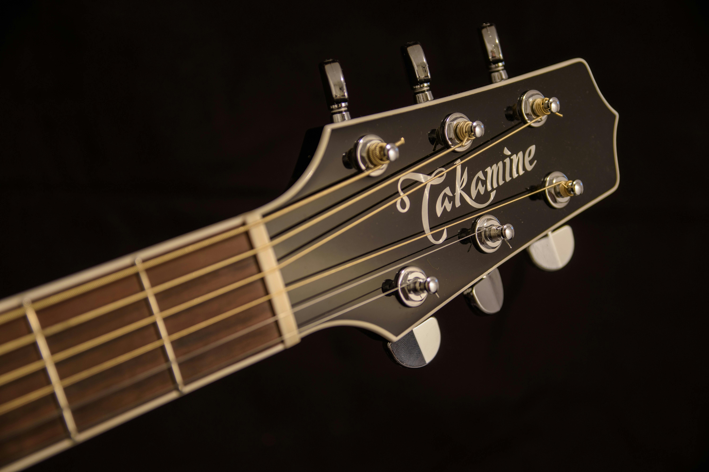

西班牙吉他

西班牙吉他
又稱古典吉他、西班牙古典吉他。
古典吉他也是尼龍絃吉他之一，亦屬於彈撥樂器。古典吉他此名稱並不表示其僅限於演奏古典音樂，不同的音樂風格，例如古典音樂、佛朗明哥、爵士音樂等皆可以以古典吉他演奏。
🎸古典吉他 ：又名西班牙吉他，又名西班牙古典吉他。主要演奏古典樂曲，技巧豐富，藝術性很高，主要使用尼龍弦，聲音柔和典雅。
🎸民謠吉他 ：主要為歌曲伴奏或自彈自唱，可以用手指或撥片（pick匹克）彈奏，娛樂性很高，採用鋼弦，聲音明亮。
🎸佛朗明哥吉他 ：發源於安達盧西亞地區，過去為舞蹈和歌曲伴奏，後來借鑑古典吉他技巧，藝術性得到提升可以獨奏，外形和古典吉他類似，採用尼龍弦。